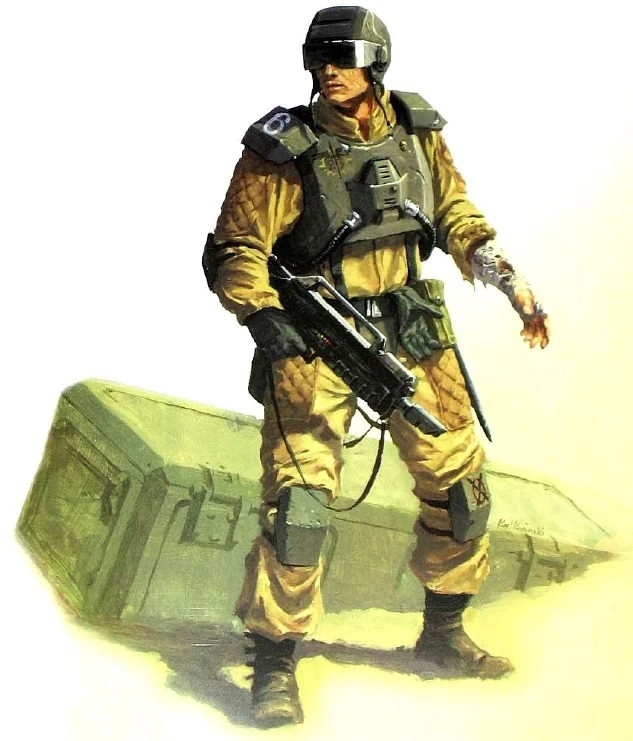

Elysia Sector
| Elysia Sector | |
|---|---|
| Imperial sector of the Segmentum Solar | |
 An Elysian Drop Trooper of the Astra Militarum, the sector's most famous export | |
| Segmentum | Segmentum Solar |
| Capital | Elysia (the homeworld; the sector's capital is recorded only as its principal world) |
| Notable worlds | Elysia, and the worlds of the Elysia System and its asteroid fields |
| Governing body | The Elysian Planetary Defence Force and the Administratum |
| Status (as of M42) | Imperial; the sector's principal world was invaded by Heretic Astartes in the Era Indomitus and defended by the Adeptus Custodes |
The Elysia Sector is the Imperial sector of the Segmentum Solar that takes its name from the verdant world of Elysia. Elysia is a Civilised World some 30 light years from Armageddon, and it is best known as the homeworld of the Elysian Drop Troops, the elite regiments of the Astra Militarum. The sector lies on a major Warp trade route, and its pirate-infested star systems have given the Elysian forces much of their experience in ship-to-ship combat.[1]
Imperial records give the sector's boundaries only in outline. The Administratum's charts name Elysia as its principal world, and most of the sector's surviving records concern the Elysia System. The sector is not well documented in the Imperial archives, and its neighbouring worlds are listed only as "unknown" in the registers.[2][a]
History
[edit]Early history
[edit]Elysia was settled as an Imperial world at an uncertain date, and its population was tithed into the Astra Militarum through the Imperial Tithe. The Elysia System was known for its asteroid fields and dense gas clouds. These gave cover to human and Aeldari pirates, who waited there to raid passing Imperial commerce.[1]
Pirate wars
[edit]The pirate threat gave the Elysian Planetary Defence Force its character. Its troops gained intensive experience in ship-to-ship combat and in assaults on isolated, space-based pirate outposts, working alongside the Navy's naval support. Those campaigns are the origin of the Elysian ability to fight in space and from orbit.[1]
Formation of the Elysian Drop Troops
[edit]The Elysian Drop Troop regiments were raised from the Elysian populace for service in the Astra Militarum. Every recruit must first serve a tour of combat duty in the Elysian PDF before joining. The regiments then train at bases across Elysia and the Elysia System, learning grav-chute drops, high-orbit insertions, sharpshooting and survival in extreme environments. No trooper may enter combat before he has been rated an expert marksman, because resupply is often weeks away.[1]
Era Indomitus
[edit]Sometime after the opening of the Great Rift in 999.M41, Elysia was invaded by a large force of Heretic Astartes. To keep the invaders from threatening Terra, the Adeptus Custodes Captain-General Trajann Valoris led the Fury of Terra Shield Host of Custodians against the traitors. The date of the invasion is not given in the sources, and it is estimated to fall in the early 42nd millennium.[3][b]
Geography
[edit]Elysia is a temperate, verdant world with a gravity of one standard gee. The Elysia System contains several asteroid fields, dense gas clouds and the training grounds of the drop regiments. Its climate and terrain are chosen for the sharpshooting and survival training that its troops receive.[1]
Notable worlds
[edit]- '''Elysia''': the homeworld and sector capital; the source of the Elysian Drop Troops and the Elysian PDF.
- '''Elysia System''': the surrounding star-system, with its asteroid fields and pirate-haunted lanes.
Governance
[edit]Elysia is governed by its planetary authorities under the Administratum, and its defence is in the hands of the Elysian PDF. The Astra Militarum's Elysian regiments answer to the Departmento Munitorum, which draws their recruits from the world. In time of war, the Imperial command may place Elysian forces under a Lord Militant.[2]
Timeline
[edit]| Date | Event |
|---|---|
| Unknown | Elysia is settled and its people are first tithed into the Astra Militarum |
| Imperial era | Pirate raids in the Elysia System force the Elysian PDF to fight in space |
| Imperial era | The Elysian Drop Troop regiments are formed from the Elysian PDF's veterans |
| 999.M41 | The Great Rift opens, and the sector is cut off from the wider Imperial core (estimated) |
| Early 42nd millennium | Heretic Astartes invade Elysia; Trajann Valoris leads the Fury of Terra Shield Host against them (estimated) |
See also
[edit]Notes
[edit]- ^ The sector's formal designation and its neighbouring sectors are not fixed in the sources consulted. The name is taken from the world, and the page is limited to what the records for Elysia itself show.
- ^ The exact year of the invasion is not recorded. The estimate is taken from the sequence of Trajann Valoris's campaigns after the Great Rift.